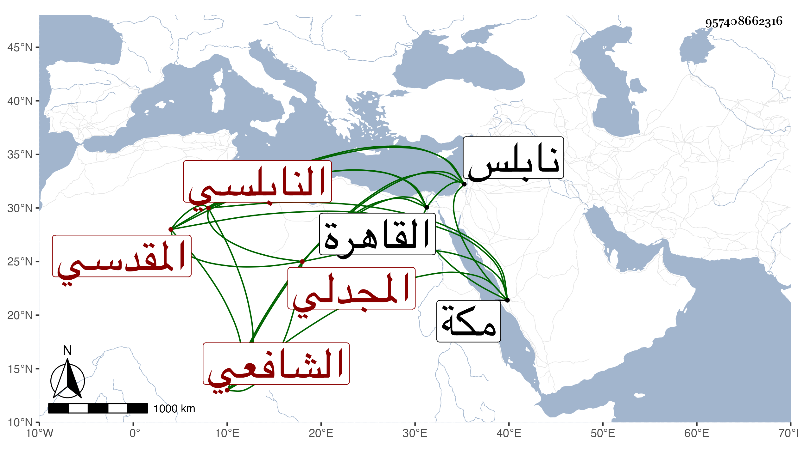

0902Sakhawi.DawLamic.ITO20230111-ara1.EIS1600.957408662316
Biography ID: 957408662316
1067
محمد بن أحمد بن عبد الله بن محمد الشمس بن أبي العباس المجدلي النابلسي المولد المقدسي الشافعي الماضي أبوه وعمه خليل ويعرف بابن أبي العباس . ولد في سلخ ربيع الآخر سنة ثمان وثلاثين وثمانمائة بنابلس وانتقل منها إلى القاهرة مع أبيه فحفظ القرآن والمنهاج وجمع الجوامع وألفية النحو وعرض واشتغل عند الشهاب الخواص وغيره وسمع على جماعة وهو ذكي متزيد كتبت عنه قوله في علمي مليح :
| رام العذول سلوى عنه قلت له | أقصر ملامك إن السمع في صمم |
| كيف السبيل إلى السلوان عنه وقد | أضحى غرامي به نار على علم |
ولقيني بمكة سنة أربع وتسعين وكأنه عزم على المجاورة ثم إنه جاور في سنتي ثمان وتسع وتسعين ومات عمه في أثنائهما وربما حضر عند الشيخ عبد المعطي المغربي .
